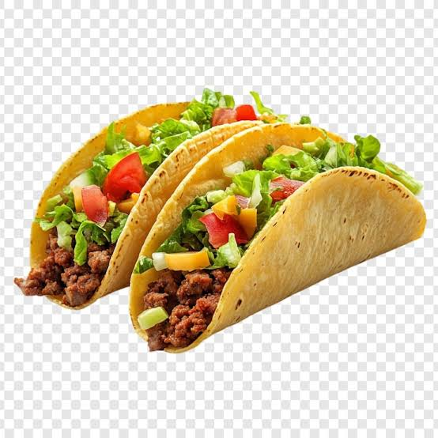

For this recipe you are going to be making quick, easy, and flavorful soft tacos. This is a recipe that can be made quick, easy, and scaled to the level that you would like very easily. As a mattor of fact, I personally make this recipe for my large family of eight people on a regular basis!